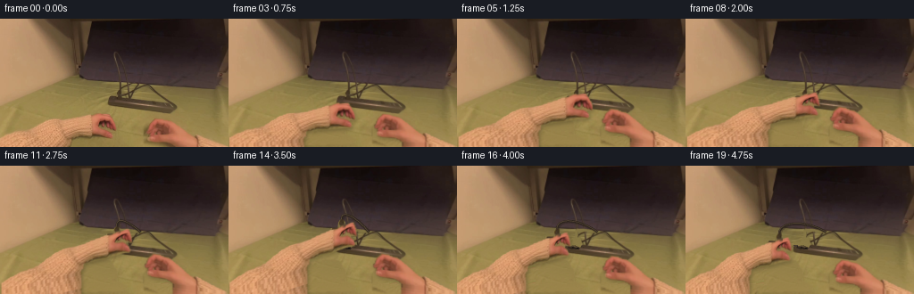
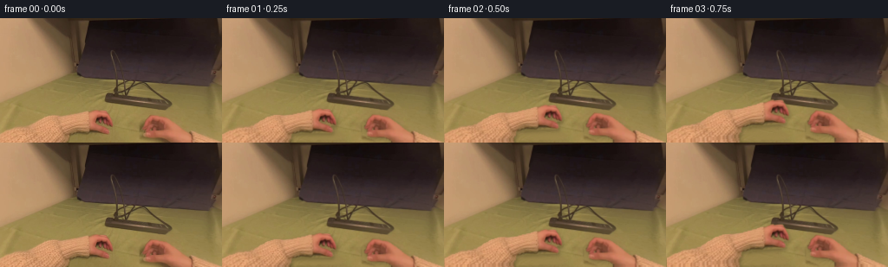
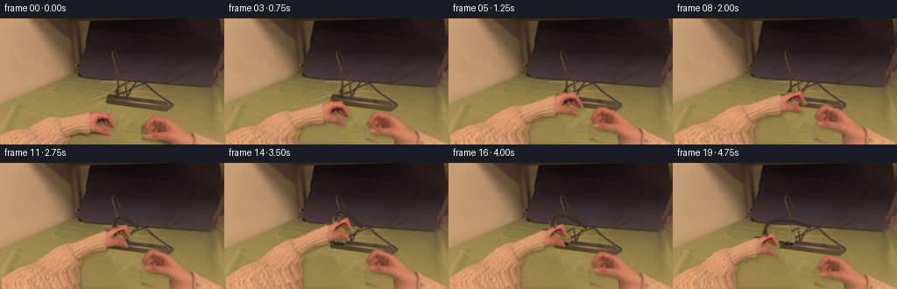
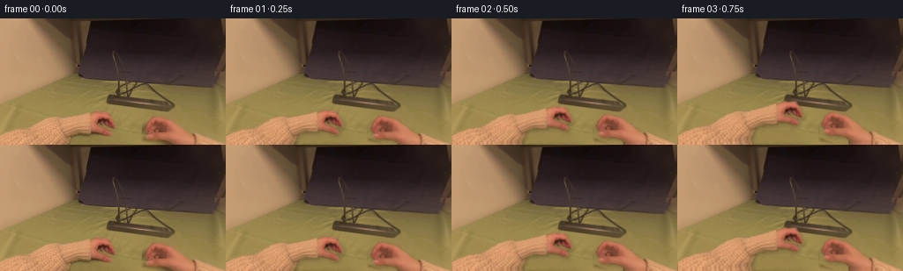

CODING AGENTS AS PIXEL WORLD MODELS
traex/GPT-6.1-Sol · common50_0021
点击播放 · 原生 RGB 像素
逐轮保存的候选
回放视频、检查图与代码变化。
每份候选均可单独播放。实际图片检查记录在下方工具轨迹中。
候选 01播放与检查图
点击播放 · 原生 RGB 像素


展开代码变化
--- 上一保存版本
+++ 本次保存版本
@@ -0,0 +1,248 @@
+from pathlib import Path
+import numpy as np
+from PIL import Image, ImageDraw
+import cv2
+from scipy.ndimage import binary_fill_holes, gaussian_filter
+import artifact_io
+
+ROOT=Path(__file__).resolve().parent
+W,H=256,144
+S=3
+HH=216
+src=np.asarray(Image.open(ROOT/'first_frame.png').convert('RGB'))
+y,x=np.mgrid[:H,:W].astype(np.float32)
+r,g,b=src.astype(float).transpose(2,0,1)
+
+# Masks are derived exclusively from chromatic evidence in the given RGB frame.
+skin=(r>1.32*g)&(r>112)&(g>52)&(b>g*.55)&(y>103)
+_,labels,stats,_=cv2.connectedComponentsWithStats(skin.astype(np.uint8),8)
+ids=sorted(range(1,len(stats)),key=lambda a:stats[a,4],reverse=True)[:2]
+ids=sorted(ids,key=lambda a:stats[a,0])
+hands=[]
+for k in ids:
+ m=(labels==k).astype(np.uint8)
+ m=cv2.morphologyEx(m,cv2.MORPH_CLOSE,np.ones((3,3),np.uint8))
+ m=binary_fill_holes(m).astype(np.uint8)
+ # include the dark finger surfaces within the skin outline
+ for yy in range(104,H):
+ xx=np.flatnonzero(m[yy])
+ if xx.size:m[yy,xx.min():xx.max()+1]=1
+ m=cv2.GaussianBlur(m.astype(np.float32),(0,0),.48)
+ hands.append(m)
+
+# Extend the forearms beyond the image; these are texture extensions, not new assets.
+tex=np.zeros((HH,W,3),np.float32);tex[:H]=src
+masks=[]
+for j,m in enumerate(hands):
+ q=np.zeros((HH,W),np.float32);q[:H]=m
+ q[H:]=m[-1]
+ masks.append(cv2.resize(q,(W*S,HH*S),interpolation=cv2.INTER_LINEAR))
+for yy in range(H,HH):
+ # A little retained variation avoids a flat-color arm at the lower border.
+ yy0=H-1-((yy-H)//3)%6
+ tex[yy]=src[yy0]
+texhi=cv2.resize(tex,(W*S,HH*S),interpolation=cv2.INTER_CUBIC)
+Y,X=np.mgrid[:H*S,:W*S].astype(np.float32);X/=S;Y/=S
+
+# Reconstruct the uncovered tabletop from its own measured illumination and grain.
+clean=(y>76)&(g>92)&(b<g*.68)&(r<g*1.30)&(~skin)
+clean &= ~((x>118)&(x<207)&(y<109))
+A=np.stack([np.ones_like(x),x/256,(y-110)/40,(x/256)**2,(x/256)*(y-110)/40],-1)
+coef=np.linalg.lstsq(A[clean],src[clean].astype(float),rcond=None)[0]
+flat=A@coef
+res=src[92:109,10:111].astype(float)-flat[92:109,10:111]
+res-=gaussian_filter(res,(1.3,1.3,0))
+res=np.clip(res,-5,5)
+grain=res[(np.arange(H)[:,None]+3)%17,(np.arange(W)[None,:]+13)%101]
+table=np.clip(flat+grain,0,255).astype(np.float32)
+
+def polymask(points,height=H,scale=S):
+ a=Image.new('L',(W*scale,height*scale),0)
+ ImageDraw.Draw(a).polygon([(round(px*scale),round(py*scale)) for px,py in points],fill=255)
+ return np.array(a).astype(np.float32)/255
+
+remove=np.maximum(hands[0],hands[1])
+# Under-hand shadows go with the hand, rather than staying painted onto the desk.
+sh0=polymask([(72,128),(110,127),(129,130),(141,136),(133,139),(84,141)],scale=1)
+sh1=polymask([(162,121),(180,127),(204,134),(229,137),(250,143),(183,144),(174,139),(162,134)],scale=1)
+remove=np.maximum(remove,np.maximum(sh0,sh1)*.95)
+remove=cv2.dilate(remove,np.ones((3,3),np.uint8))
+remove=cv2.GaussianBlur(remove,(0,0),.65)
+bg=src.astype(np.float32)*(1-remove[...,None])+table*remove[...,None]
+bghi=cv2.resize(bg,(W*S,H*S),interpolation=cv2.INTER_CUBIC)
+
+# Raised black plug at the near-left socket. Reuse its original surface pixels.
+pivot=np.array([133.,88.])
+plugmask=polymask([(122,87),(129,87),(130,83),(132,81),(135,81),(137,83),(137,89),(136,92),(124,92),(122,90)])
+plugrgb=cv2.resize(src.astype(np.float32),(W*S,H*S),interpolation=cv2.INTER_CUBIC)
+
+# Backplate is drawn only as the plug uncovers it, along the real strip's axis.
+back=bghi.copy()
+prem=polymask([(121,86),(129,86),(130,81),(138,80),(140,88),(137,93),(121,93)])
+# table above the top edge, strip plastic below it
+for yy in range(80,94):
+ for xx in range(121,141):
+ if yy < 89+(xx-125)*.18:
+ value=table[yy,xx]
+ else:
+ sx=min(W-1,xx+25);sy=min(H-1,yy+5)
+ value=src[sy,sx].astype(float)
+ if value.mean()>85:value=np.array([74,61,47])+grain[yy,xx]
+ back[yy*S:(yy+1)*S,xx*S:(xx+1)*S]=value
+back=bghi*(1-prem[...,None])+back*prem[...,None]
+# exposed oval socket and its two holes, perspectively flattened
+socket=Image.new('RGBA',(W*S,H*S));d=ImageDraw.Draw(socket)
+def poly(d,pts,col): d.polygon([(int(a*S),int(b*S)) for a,b in pts],fill=col)
+poly(d,[(125,90),(132,89.5),(138,92),(136,94),(128,93.5),(124,92)],(46,36,28,255))
+poly(d,[(126,90),(132,90),(138,92),(136,92.5),(131,91.4),(126,91.2)],(90,73,52,190))
+poly(d,[(129,91),(131,91.4),(131,92.4),(129,92)],(17,14,11,255))
+poly(d,[(134,91.7),(136,92.1),(136,93),(134,92.7)],(18,15,12,255))
+a=np.array(socket).astype(float)/255
+back=back*(1-a[...,3:])+a[...,:3]*255*a[...,3:]
+
+# Removing only the cord's moving leg leaves the distant wire and strip fixed.
+cm=Image.new('L',(W*S,H*S));dc=ImageDraw.Draw(cm)
+dc.line([(133.8*S,85*S),(134.1*S,72*S),(142*S,72*S),(151*S,73*S),(157*S,74*S)],fill=255,width=round(3.3*S))
+cma=np.array(cm).astype(float)/255
+cma=cv2.GaussianBlur(cma,(0,0),S*.28)
+thi=cv2.resize(table,(W*S,H*S),interpolation=cv2.INTER_CUBIC)
+back_without_cord=back*(1-cma[...,None])+thi*cma[...,None]
+
+
+def ease(v):
+ v=np.clip(v,0,1);return v*v*(3-2*v)
+
+def motion(t):
+ reach=ease(t/1.5)
+ grip=ease((t-1.25)/.75)
+ lift=ease((t-2.15)/1.1)
+ withdraw=ease((t-3.3)/1.1)
+ dx=22*reach-4*lift-25*withdraw
+ dy=-23*reach-19*lift+17*withdraw
+ return reach,grip,lift,withdraw,dx,dy
+
+def disp(xx,yy,dx,dy,grip,j):
+ if j==0:
+ w=np.clip((xx+10)/120,0,1.08)
+ curl=np.exp(-((xx-124)/13)**2-((yy-122)/10)**2)*grip
+ press=np.exp(-((xx-110)/12)**2-((yy-108)/7)**2)*grip
+ return dx*w-4.5*curl+1.6*press,dy*w-4.0*curl+2*press
+ w=np.clip((266-xx)/95,0,1.08)
+ curl=np.exp(-((xx-177)/17)**2-((yy-117)/12)**2)*grip
+ return dx*w+1.3*curl,dy*w+1.2*curl
+
+
+def handwarp(j,dx,dy,grip):
+ xx=X.copy();yy=Y.copy()
+ for k in range(9):
+ u,v=disp(xx,yy,dx,dy,grip,j)
+ xx=X-u;yy=Y-v
+ mapx=(xx*S).astype(np.float32);mapy=(yy*S).astype(np.float32)
+ rgb=cv2.remap(texhi,mapx,mapy,cv2.INTER_CUBIC,borderMode=cv2.BORDER_REPLICATE)
+ alpha=cv2.remap(masks[j],mapx,mapy,cv2.INTER_LINEAR,borderMode=cv2.BORDER_CONSTANT)
+ return rgb,np.clip(alpha,0,1)
+
+
+def bezier(p0,p1,p2,p3,n=65):
+ t=np.linspace(0,1,n)[:,None];return (1-t)**3*p0+3*(1-t)**2*t*p1+3*(1-t)*t*t*p2+t**3*p3
+
+
+def cable_layer(start,lift,withdraw):
+ lay=Image.new('RGBA',(W*S,H*S));d=ImageDraw.Draw(lay)
+ fixed=np.array([157.,74.])
+ p0=np.array(start)
+ # Slack lifts with the connector, bowing between it and the resting loop.
+ p1=p0+np.array([-2.,-14.])
+ p2=np.array([143.-12*withdraw,69.-13*lift+3*withdraw])
+ pts=bezier(p0,p1,p2,fixed)
+ pts=[tuple(v*S) for v in pts]
+ d.line([(a+S*.7,b+S*1) for a,b in pts],fill=(32,24,16,80),width=round(3.6*S))
+ d.line(pts,fill=(47,38,30,255),width=round(2.6*S))
+ d.line([(a-S*.35,b-S*.32) for a,b in pts],fill=(93,76,57,245),width=max(1,round(.65*S)))
+ return np.asarray(lay).astype(np.float32)
+
+
+def over(im,rgba):
+ a=rgba[...,3:]/255
+ return im*(1-a)+rgba[...,:3]*a
+
+
+def plug_layer(lift,withdraw,grip,dx,dy):
+ # The connector follows the grip after contact. Small roll reveals its side.
+ pdx=-4*lift-25*withdraw
+ pdy=-19*lift+17*withdraw
+ center=pivot+np.array([pdx,pdy])
+ ang=(-.10*lift+.14*withdraw)
+ scx=1+.10*lift;scy=1+.42*lift
+ c=np.cos(ang);s=np.sin(ang)
+ A=np.array([[c*scx,-s*scy],[s*scx,c*scy]],np.float32)
+ off=center-A@pivot
+ M=np.c_[A,off*S];
+ rgba=np.zeros((H*S,W*S,4),np.float32)
+ rgba[:,:,:3]=cv2.warpAffine(plugrgb,M,(W*S,H*S),flags=cv2.INTER_CUBIC)
+ rgba[:,:,3]=cv2.warpAffine(plugmask*255,M,(W*S,H*S),flags=cv2.INTER_LINEAR)
+ # Brass blades project from the connector, and appear only once clear.
+ pins=Image.new('RGBA',(W*S,H*S));d=ImageDraw.Draw(pins)
+ if lift>.12:
+ def trans(v):return A@np.array(v)+off
+ for xx in [128.2,134.0]:
+ p=[trans([xx,91]),trans([xx+1.2,91.3]),trans([xx+1.2,94+3*lift]),trans([xx,93.7+3*lift])]
+ poly(d,p,(140,129,100,int(255*ease((lift-.12)/.35))))
+ q=[trans([xx+.2,91.2]),trans([xx+.5,91.3]),trans([xx+.5,93.8+3*lift]),trans([xx+.2,93.6+3*lift])]
+ poly(d,q,(201,188,147,int(220*lift)))
+ pinarr=np.asarray(pins).astype(float)
+ merged=over(pinarr[...,:3],rgba)
+ union=1-(1-rgba[...,3]/255)*(1-pinarr[...,3]/255)
+ # use ordinary premultiplied compositing for pins behind the plug
+ both=np.zeros_like(rgba);both[...,3]=union*255
+ premc=rgba[...,:3]*(rgba[...,3:]/255)+pinarr[...,:3]*(pinarr[...,3:]/255)*(1-rgba[...,3:]/255)
+ both[...,:3]=premc/np.maximum(union[...,None],1e-6)
+ cable_start=A@np.array([134.,82.])+off
+ return both,cable_start,center
+
+
+def main():
+ frames=[src.copy()]
+ for i in range(1,20):
+ t=i/4
+ reach,grip,lift,withdraw,dx,dy=motion(t)
+ obj,cstart,center=plug_layer(lift,withdraw,grip,dx,dy)
+ # Socket stays fixed; hand and connector move in front of it.
+ uncover=ease((t-2.0)/.50)
+ cordmove=ease((t-2.0)/.55)
+ im=bghi*(1-uncover)+back*uncover
+ im=im*(1-cma[...,None]*cordmove)+thi*cma[...,None]*cordmove
+ if cordmove>0:
+ cable=cable_layer(cstart,lift,withdraw)
+ cable[...,3]*=cordmove
+ im=over(im,cable)
+ if uncover>0:
+ obj[...,3]*=uncover
+ im=over(im,obj)
+ # Bracing hand advances to the far end, with a relaxed later release.
+ rightreach=ease(t/1.7);rightrelease=ease((t-3.65)/.85)
+ rdx=-2*rightreach+3*rightrelease
+ rdy=-14*rightreach+7*rightrelease
+ rgbR,aR=handwarp(1,rdx,rdy,.3*rightreach)
+ rgbL,aL=handwarp(0,dx,dy,grip)
+ # Broad, soft moving shadows are cast on the actual desk and strip.
+ for a,amount in [(aR,.17),(aL,.20)]:
+ shadow=cv2.warpAffine(a,np.array([[1,0,1.5*S],[0,1,2.3*S]],np.float32),(W*S,H*S))
+ shadow=cv2.GaussianBlur(shadow,(0,0),1.9*S)
+ im*=1-amount*shadow[...,None]
+ im=im*(1-aR[...,None])+rgbR*aR[...,None]
+ im=im*(1-aL[...,None])+rgbL*aL[...,None]
+ # A narrow exposed connector edge remains visible against the curled fingers.
+ if lift>.05:
+ front=obj.copy()
+ edge=ease((X-center[0]+1)/4)*ease((center[1]+1-Y)/5)
+ front[...,3]*=edge*.86*lift
+ im=over(im,front)
+ frame=cv2.resize(np.clip(im,0,255),(W,H),interpolation=cv2.INTER_AREA)
+ frames.append(np.clip(np.rint(frame),0,255).astype(np.uint8))
+ arr=np.stack(frames)
+ artifact_io.save(arr,ROOT)
+ np.save(ROOT/'candidate_frames.npy',arr)
+ print('Saved',arr.shape,arr.dtype,'first frame identical:',np.array_equal(arr[0],src))
+
+if __name__=='__main__':main()
候选 02播放与检查图
点击播放 · 原生 RGB 像素


展开代码变化
--- 上一保存版本
+++ 本次保存版本
@@ -19,14 +19,23 @@
ids=sorted(range(1,len(stats)),key=lambda a:stats[a,4],reverse=True)[:2]
ids=sorted(ids,key=lambda a:stats[a,0])
hands=[]
+erase_hands=[]
for k in ids:
m=(labels==k).astype(np.uint8)
m=cv2.morphologyEx(m,cv2.MORPH_CLOSE,np.ones((3,3),np.uint8))
m=binary_fill_holes(m).astype(np.uint8)
- # include the dark finger surfaces within the skin outline
+ # A conservative removal silhouette also covers the contact shadows.
+ er=m.copy()
for yy in range(104,H):
xx=np.flatnonzero(m[yy])
- if xx.size:m[yy,xx.min():xx.max()+1]=1
+ if xx.size:er[yy,xx.min():xx.max()+1]=1
+ erase_hands.append(cv2.GaussianBlur(er.astype(np.float32),(0,0),.48))
+ # Recover the dark nail and fingertip without filling the open space
+ # between the thumb and the other fingers with tabletop-colored pixels.
+ if len(hands)==0:
+ cv2.fillPoly(m,[np.array([(111,113),(121,113),(126,116),
+ (130,120),(132,124),(129,126),
+ (124,124),(117,122),(112,120)],np.int32)],1)
m=cv2.GaussianBlur(m.astype(np.float32),(0,0),.48)
hands.append(m)
@@ -61,7 +70,7 @@
ImageDraw.Draw(a).polygon([(round(px*scale),round(py*scale)) for px,py in points],fill=255)
return np.array(a).astype(np.float32)/255
-remove=np.maximum(hands[0],hands[1])
+remove=np.maximum(erase_hands[0],erase_hands[1])
# Under-hand shadows go with the hand, rather than staying painted onto the desk.
sh0=polymask([(72,128),(110,127),(129,130),(141,136),(133,139),(84,141)],scale=1)
sh1=polymask([(162,121),(180,127),(204,134),(229,137),(250,143),(183,144),(174,139),(162,134)],scale=1)
@@ -105,8 +114,8 @@
dc.line([(133.8*S,85*S),(134.1*S,72*S),(142*S,72*S),(151*S,73*S),(157*S,74*S)],fill=255,width=round(3.3*S))
cma=np.array(cm).astype(float)/255
cma=cv2.GaussianBlur(cma,(0,0),S*.28)
+cma*=np.clip((Y-(70+.16*(X-134)))/1.4,0,1)
thi=cv2.resize(table,(W*S,H*S),interpolation=cv2.INTER_CUBIC)
-back_without_cord=back*(1-cma[...,None])+thi*cma[...,None]
def ease(v):
@@ -116,7 +125,7 @@
reach=ease(t/1.5)
grip=ease((t-1.25)/.75)
lift=ease((t-2.15)/1.1)
- withdraw=ease((t-3.3)/1.1)
+ withdraw=ease((t-3.3)/1.55)
dx=22*reach-4*lift-25*withdraw
dy=-23*reach-19*lift+17*withdraw
return reach,grip,lift,withdraw,dx,dy
@@ -191,7 +200,6 @@
q=[trans([xx+.2,91.2]),trans([xx+.5,91.3]),trans([xx+.5,93.8+3*lift]),trans([xx+.2,93.6+3*lift])]
poly(d,q,(201,188,147,int(220*lift)))
pinarr=np.asarray(pins).astype(float)
- merged=over(pinarr[...,:3],rgba)
union=1-(1-rgba[...,3]/255)*(1-pinarr[...,3]/255)
# use ordinary premultiplied compositing for pins behind the plug
both=np.zeros_like(rgba);both[...,3]=union*255
可观测工具轨迹
实际执行的命令与返回图片。
命令 1exit 0
/bin/bash -lc "ls -la && cat prompt.txt && printf '\\n--- RULES ---\\n' && cat GENERATION_RULES.md"
命令 2exit 0
/bin/bash -lc "cat task_spec.json && cat artifact_io.py && python - <<'PY'
from PIL import Image
import numpy as np
im=np.array(Image.open('first_frame.png').convert('RGB'))
print(im.shape)
# Color/luminance ascii overview
im2=np.array(Image.fromarray(im).resize((96,54)))
g=im2.mean(2)
chars='@%#*+=-:. '
for row in g:
print(''.join(chars[min(9,int(v*10/256))] for v in row))
print('rows color sample every 8 pixels')
for y in range(0,144,8):
print(y, ['%d,%d,%d'%tuple(im[y,x]) for x in range(0,256,16)])
PY"命令 3exit 0
/bin/bash -lc "python - <<'PY'
from PIL import Image
import numpy as np
I=np.array(Image.open('first_frame.png'))
# Categories using color ratio. S skin, t table, # dark, . highlights
for y in range(60,144,2):
s=''
for x in range(0,256,2):
r,g,b=I[y:y+2,x:x+2].mean((0,1))
if r>1.36*g and r>110: c='S'
elif r>1.36*g and r>70: c='s'
elif r>1.22*g and b>g*.65 and r>140: c='H'
elif g>95 and b<g*.71: c='.'
elif r+g+b<120:c='@'
elif r+g+b<190:c='#'
elif r+g+b<250:c='o'
elif r+g+b<320:c='+'
else:c='-'
s+=c
print(f'{y:3d} '+s)
print('\\nGRAYSCALE CROP strip x115..205 y65..108')
chars='@%#*+=-:. '
for y in range(65,109):
print(f'{y:3d} '+''.join(chars[min(9,int(I[y,x].mean()*10/256))] for x in range(115,206)))
PY"命令 4exit 0
/bin/bash -lc "python - <<'PY'
import numpy as np
from PIL import Image
I=np.array(Image.open('first_frame.png'))
print('Hand x50:140 y103:144, each char one pixel')
chars='@%#*+=-:. '
for y in range(103,144):
print(f'{y:3} '+''.join(chars[min(9,int(I[y,x].mean()*10/256))] for x in range(50,140)))
print('Plug x119:159 y68:96')
for y in range(68,97):
print(f'{y:3} '+''.join(chars[min(9,int(I[y,x].mean()*10/256))] for x in range(119,160)))
PY"命令 5exit 0
/bin/bash -lc "python - <<'PY'
import importlib.util
for x in ['scipy','cv2']:
print(x, bool(importlib.util.find_spec(x)))
import numpy as np
from PIL import Image
I=np.array(Image.open('first_frame.png'))
# chromatic category: T tabletop, K cable dark, B body, S skin
for y in range(65,110):
s=''
for x in range(110,211):
r,g,b=map(float,I[y,x]);v=(r+g+b)/3
if r>1.37*g and r>120:c='S'
elif b<g*.69 and g>87:c='.'
elif v<45:c='@'
elif v<60:c='#'
elif v<75:c='o'
elif v<87:c='+'
elif v<100:c='-'
else:c='='
s+=c
print(f'{y:3d} {s}')
PY"命令 6exit 0
/bin/bash -lc "python - <<'PY'
import numpy as np, cv2
from PIL import Image
I=np.array(Image.open('first_frame.png')).astype(float)
r,g,b=I.transpose(2,0,1)
sk=(r>1.32*g)&(r>112)&(g>52)&(b>g*.55)&(np.indices(r.shape)[0]>103)
n,l,st,ct=cv2.connectedComponentsWithStats(sk.astype('uint8'),8)
for j in range(1,n):
if st[j,4]>10:print(j,st[j],ct[j])
# enlarged ASCII of bottom area categoric boundary
m=sk
for y in range(104,144):
print(f'{y:3d} '+''.join('H' if m[y,x] else ' ' for x in range(256)))
PY"命令 7exit 0
/bin/bash -lc "python - <<'PY'
import cv2,numpy as np
from PIL import Image
from scipy.ndimage import binary_fill_holes
I=np.array(Image.open('first_frame.png'));r,g,b=I.transpose(2,0,1).astype(float);Y,X=np.mgrid[:144,:256]
a=((r>1.32*g)&(r>112)&(g>52)&(b>g*.55)&(Y>103)).astype('uint8')
_,l,s,_=cv2.connectedComponentsWithStats(a)
for k in [1,2]:
m=binary_fill_holes(cv2.morphologyEx((l==k).astype('uint8'),cv2.MORPH_CLOSE,np.ones((3,3),np.uint8)))
print('Hand',k)
for y in range(104,144):
pos=np.flatnonzero(m[y]);
if pos.size:print(y,pos.min(),pos.max())
PY"命令 8exit 0
/bin/bash -lc "python - <<'PY'
import numpy as np
from PIL import Image
I=np.array(Image.open('first_frame.png'))
for y in range(71,98):
print(y,' '.join('%3d'%round(I[y,x].mean()) for x in range(125,158)))
print('Hand base R,G,B average patches')
for x,y in [(25,137),(50,139),(70,138),(205,140),(225,139),(178,125),(118,110)]:print(x,y,np.median(I[y-2:y+3,x-2:x+3],(0,1)))
PY"命令 9exit 0
/bin/bash -lc "cat > generate.py <<'PY'
from pathlib import Path
import numpy as np
from PIL import Image, ImageDraw
import cv2
from scipy.ndimage import binary_fill_holes, gaussian_filter
import artifact_io
ROOT=Path(__file__).resolve().parent
W,H=256,144
S=3
HH=216
src=np.asarray(Image.open(ROOT/'first_frame.png').convert('RGB'))
y,x=np.mgrid[:H,:W].astype(np.float32)
r,g,b=src.astype(float).transpose(2,0,1)
# Masks are derived exclusively from chromatic evidence in the given RGB frame.
skin=(r>1.32*g)&(r>112)&(g>52)&(b>g*.55)&(y>103)
_,labels,stats,_=cv2.connectedComponentsWithStats(skin.astype(np.uint8),8)
ids=sorted(range(1,len(stats)),key=lambda a:stats[a,4],reverse=True)[:2]
ids=sorted(ids,key=lambda a:stats[a,0])
hands=[]
for k in ids:
m=(labels==k).astype(np.uint8)
m=cv2.morphologyEx(m,cv2.MORPH_CLOSE,np.ones((3,3),np.uint8))
m=binary_fill_holes(m).astype(np.uint8)
# include the dark finger surfaces within the skin outline
for yy in range(104,H):
xx=np.flatnonzero(m[yy])
if xx.size:m[yy,xx.min():xx.max()+1]=1
m=cv2.GaussianBlur(m.astype(np.float32),(0,0),.48)
hands.append(m)
# Extend the forearms beyond the image; these are texture extensions, not new assets.
tex=np.zeros((HH,W,3),np.float32);tex[:H]=src
masks=[]
for j,m in enumerate(hands):
q=np.zeros((HH,W),np.float32);q[:H]=m
q[H:]=m[-1]
masks.append(cv2.resize(q,(W*S,HH*S),interpolation=cv2.INTER_LINEAR))
for yy in range(H,HH):
# A little retained variation avoids a flat-color arm at the lower border.
yy0=H-1-((yy-H)//3)%6
tex[yy]=src[yy0]
texhi=cv2.resize(tex,(W*S,HH*S),interpolation=cv2.INTER_CUBIC)
Y,X=np.mgrid[:H*S,:W*S].astype(np.float32);X/=S;Y/=S
# Reconstruct the uncovered tabletop from its own measured illumination and grain.
clean=(y>76)&(g>92)&(b<g*.68)&(r<g*1.30)&(~skin)
clean &= ~((x>118)&(x<207)&(y<109))
A=np.stack([np.ones_like(x),x/256,(y-110)/40,(x/256)**2,(x/256)*(y-110)/40],-1)
coef=np.linalg.lstsq(A[clean],src[clean].astype(float),rcond=None)[0]
flat=A@coef
res=src[92:109,10:111].astype(float)-flat[92:109,10:111]
res-=gaussian_filter(res,(1.3,1.3,0))
res=np.clip(res,-5,5)
grain=res[(np.arange(H)[:,None]+3)%17,(np.arange(W)[None,:]+13)%101]
table=np.clip(flat+grain,0,255).astype(np.float32)
def polymask(points,height=H,scale=S):
a=Image.new('L',(W*scale,height*scale),0)
ImageDraw.Draw(a).polygon([(round(px*scale),round(py*scale)) for px,py in points],fill=255)
return np.array(a).astype(np.float32)/255
remove=np.maximum(hands[0],hands[1])
# Under-hand shadows go with the hand, rather than staying painted onto the desk.
sh0=polymask([(72,128),(110,127),(129,130),(141,136),(133,139),(84,141)],scale=1)
sh1=polymask([(162,121),(180,127),(204,134),(229,137),(250,143),(183,144),(174,139),(162,134)],scale=1)
remove=np.maximum(remove,np.maximum(sh0,sh1)*.95)
remove=cv2.dilate(remove,np.ones((3,3),np.uint8))
remove=cv2.GaussianBlur(remove,(0,0),.65)
bg=src.astype(np.float32)*(1-remove[...,None])+table*remove[...,None]
bghi=cv2.resize(bg,(W*S,H*S),interpolation=cv2.INTER_CUBIC)
# Raised black plug at the near-left socket. Reuse its original surface pixels.
pivot=np.array([133.,88.])
plugmask=polymask([(122,87),(129,87),(130,83),(132,81),(135,81),(137,83),(137,89),(136,92),(124,92),(122,90)])
plugrgb=cv2.resize(src.astype(np.float32),(W*S,H*S),interpolation=cv2.INTER_CUBIC)
# Backplate is drawn only as the plug uncovers it, along the real strip's axis.
back=bghi.copy()
prem=polymask([(121,86),(129,86),(130,81),(138,80),(140,88),(137,93),(121,93)])
# table above the top edge, strip plastic below it
for yy in range(80,94):
for xx in range(121,141):
if yy < 89+(xx-125)*.18:
value=table[yy,xx]
else:
sx=min(W-1,xx+25);sy=min(H-1,yy+5)
value=src[sy,sx].astype(float)
if value.mean()>85:value=np.array([74,61,47])+grain[yy,xx]
back[yy*S:(yy+1)*S,xx*S:(xx+1)*S]=value
back=bghi*(1-prem[...,None])+back*prem[...,None]
# exposed oval socket and its two holes, perspectively flattened
socket=Image.new('RGBA',(W*S,H*S));d=ImageDraw.Draw(socket)
def poly(d,pts,col): d.polygon([(int(a*S),int(b*S)) for a,b in pts],fill=col)
poly(d,[(125,90),(132,89.5),(138,92),(136,94),(128,93.5),(124,92)],(46,36,28,255))
poly(d,[(126,90),(132,90),(138,92),(136,92.5),(131,91.4),(126,91.2)],(90,73,52,190))
poly(d,[(129,91),(131,91.4),(131,92.4),(129,92)],(17,14,11,255))
poly(d,[(134,91.7),(136,92.1),(136,93),(134,92.7)],(18,15,12,255))
a=np.array(socket).astype(float)/255
back=back*(1-a[...,3:])+a[...,:3]*255*a[...,3:]
# Removing only the cord's moving leg leaves the distant wire and strip fixed.
cm=Image.new('L',(W*S,H*S));dc=ImageDraw.Draw(cm)
dc.line([(133.8*S,85*S),(134.1*S,72*S),(142*S,72*S),(151*S,73*S),(157*S,74*S)],fill=255,width=round(3.3*S))
cma=np.array(cm).astype(float)/255
cma=cv2.GaussianBlur(cma,(0,0),S*.28)
thi=cv2.resize(table,(W*S,H*S),interpolation=cv2.INTER_CUBIC)
back_without_cord=back*(1-cma[...,None])+thi*cma[...,None]
def ease(v):
v=np.clip(v,0,1);return v*v*(3-2*v)
def motion(t):
reach=ease(t/1.5)
grip=ease((t-1.25)/.75)
lift=ease((t-2.15)/1.1)
withdraw=ease((t-3.3)/1.1)
dx=22*reach-4*lift-25*withdraw
dy=-23*reach-19*lift+17*withdraw
return reach,grip,lift,withdraw,dx,dy
def disp(xx,yy,dx,dy,grip,j):
if j==0:
w=np.clip((xx+10)/120,0,1.08)
curl=np.exp(-((xx-124)/13)**2-((yy-122)/10)**2)*grip
press=np.exp(-((xx-110)/12)**2-((yy-108)/7)**2)*grip
return dx*w-4.5*curl+1.6*press,dy*w-4.0*curl+2*press
w=np.clip((266-xx)/95,0,1.08)
curl=np.exp(-((xx-177)/17)**2-((yy-117)/12)**2)*grip
return dx*w+1.3*curl,dy*w+1.2*curl
def handwarp(j,dx,dy,grip):
xx=X.copy();yy=Y.copy()
for k in range(9):
u,v=disp(xx,yy,dx,dy,grip,j)
xx=X-u;yy=Y-v
mapx=(xx*S).astype(np.float32);mapy=(yy*S).astype(np.float32)
rgb=cv2.remap(texhi,mapx,mapy,cv2.INTER_CUBIC,borderMode=cv2.BORDER_REPLICATE)
alpha=cv2.remap(masks[j],mapx,mapy,cv2.INTER_LINEAR,borderMode=cv2.BORDER_CONSTANT)
return rgb,np.clip(alpha,0,1)
def bezier(p0,p1,p2,p3,n=65):
t=np.linspace(0,1,n)[:,None];return (1-t)**3*p0+3*(1-t)**2*t*p1+3*(1-t)*t*t*p2+t**3*p3
def cable_layer(start,lift,withdraw):
lay=Image.new('RGBA',(W*S,H*S));d=ImageDraw.Draw(lay)
fixed=np.array([157.,74.])
p0=np.array(start)
# Slack lifts with the connector, bowing between it and the resting loop.
p1=p0+np.array([-2.,-14.])
p2=np.array([143.-12*withdraw,69.-13*lift+3*withdraw])
pts=bezier(p0,p1,p2,fixed)
pts=[tuple(v*S) for v in pts]
d.line([(a+S*.7,b+S*1) for a,b in pts],fill=(32,24,16,80),width=round(3.6*S))
d.line(pts,fill=(47,38,30,255),width=round(2.6*S))
d.line([(a-S*.35,b-S*.32) for a,b in pts],fill=(93,76,57,245),width=max(1,round(.65*S)))
return np.asarray(lay).astype(np.float32)
def over(im,rgba):
a=rgba[...,3:]/255
return im*(1-a)+rgba[...,:3]*a
def plug_layer(lift,withdraw,grip,dx,dy):
# The connector follows the grip after contact. Small roll reveals its side.
pdx=-4*lift-25*withdraw
pdy=-19*lift+17*withdraw
center=pivot+np.array([pdx,pdy])
ang=(-.10*lift+.14*withdraw)
scx=1+.10*lift;scy=1+.42*lift
c=np.cos(ang);s=np.sin(ang)
A=np.array([[c*scx,-s*scy],[s*scx,c*scy]],np.float32)
off=center-A@pivot
M=np.c_[A,off*S];
rgba=np.zeros((H*S,W*S,4),np.float32)
rgba[:,:,:3]=cv2.warpAffine(plugrgb,M,(W*S,H*S),flags=cv2.INTER_CUBIC)
rgba[:,:,3]=cv2.warpAffine(plugmask*255,M,(W*S,H*S),flags=cv2.INTER_LINEAR)
# Brass blades project from the connector, and appear only once clear.
pins=Image.new('RGBA',(W*S,H*S));d=ImageDraw.Draw(pins)
if lift>.12:
def trans(v):return A@np.array(v)+off
for xx in [128.2,134.0]:
p=[trans([xx,91]),trans([xx+1.2,91.3]),trans([xx+1.2,94+3*lift]),trans([xx,93.7+3*lift])]
poly(d,p,(140,129,100,int(255*ease((lift-.12)/.35))))
q=[trans([xx+.2,91.2]),trans([xx+.5,91.3]),trans([xx+.5,93.8+3*lift]),trans([xx+.2,93.6+3*lift])]
poly(d,q,(201,188,147,int(220*lift)))
pinarr=np.asarray(pins).astype(float)
merged=over(pinarr[...,:3],rgba)
union=1-(1-rgba[...,3]/255)*(1-pinarr[...,3]/255)
# use ordinary premultiplied compositing for pins behind the plug
both=np.zeros_like(rgba);both[...,3]=union*255
premc=rgba[...,:3]*(rgba[...,3:]/255)+pinarr[...,:3]*(pinarr[...,3:]/255)*(1-rgba[...,3:]/255)
both[...,:3]=premc/np.maximum(union[...,None],1e-6)
cable_start=A@np.array([134.,82.])+off
return both,cable_start,center
def main():
frames=[src.copy()]
for i in range(1,20):
t=i/4
reach,grip,lift,withdraw,dx,dy=motion(t)
obj,cstart,center=plug_layer(lift,withdraw,grip,dx,dy)
# Socket stays fixed; hand and connector move in front of it.
uncover=ease((t-2.0)/.50)
cordmove=ease((t-2.0)/.55)
im=bghi*(1-uncover)+back*uncover
im=im*(1-cma[...,None]*cordmove)+thi*cma[...,None]*cordmove
if cordmove>0:
cable=cable_layer(cstart,lift,withdraw)
cable[...,3]*=cordmove
im=over(im,cable)
if uncover>0:
obj[...,3]*=uncover
im=over(im,obj)
# Bracing hand advances to the far end, with a relaxed later release.
rightreach=ease(t/1.7);rightrelease=ease((t-3.65)/.85)
rdx=-2*rightreach+3*rightrelease
rdy=-14*rightreach+7*rightrelease
rgbR,aR=handwarp(1,rdx,rdy,.3*rightreach)
rgbL,aL=handwarp(0,dx,dy,grip)
# Broad, soft moving shadows are cast on the actual desk and strip.
for a,amount in [(aR,.17),(aL,.20)]:
shadow=cv2.warpAffine(a,np.array([[1,0,1.5*S],[0,1,2.3*S]],np.float32),(W*S,H*S))
shadow=cv2.GaussianBlur(shadow,(0,0),1.9*S)
im*=1-amount*shadow[...,None]
im=im*(1-aR[...,None])+rgbR*aR[...,None]
im=im*(1-aL[...,None])+rgbL*aL[...,None]
# A narrow exposed connector edge remains visible against the curled fingers.
if lift>.05:
front=obj.copy()
edge=ease((X-center[0]+1)/4)*ease((center[1]+1-Y)/5)
front[...,3]*=edge*.86*lift
im=over(im,front)
frame=cv2.resize(np.clip(im,0,255),(W,H),interpolation=cv2.INTER_AREA)
frames.append(np.clip(np.rint(frame),0,255).astype(np.uint8))
arr=np.stack(frames)
artifact_io.save(arr,ROOT)
np.save(ROOT/'candidate_frames.npy',arr)
print('Saved',arr.shape,arr.dtype,'first frame identical:',np.array_equal(arr[0],src))
if __name__=='__main__':main()
PY
python generate.py"命令 10exit 0
/bin/bash -lc "python - <<'PY'
import numpy as np,cv2
f=np.load('candidate_frames.npy');I=f[0]
print('Mean absolute frame differences',np.round(np.mean(np.abs(np.diff(f.astype(float),axis=0)),axis=(1,2,3)),2))
for i in [1,5,8,12,16,19]:
a=f[i].astype(float);r,g,b=a.transpose(2,0,1)
print('\\nFRAME',i)
for y in range(58,144,2):
s=''
for x in range(0,256,2):
rr,gg,bb=a[y:y+2,x:x+2].mean((0,1));v=(rr+gg+bb)/3
if rr>1.32*gg and rr>115: c='H'
elif gg>94 and bb<gg*.69:c='.'
elif v<45:c='@'
elif v<65:c='#'
elif v<85:c='o'
elif v<105:c='+'
else:c='-'
s+=c
print(f'{y:3} {s}')
PY"命令 11exit 0
/bin/bash -lc "python - <<'PY'
import numpy as np
f=np.load('candidate_frames.npy');chars='@%#*+=-:. '
for k in [0,8,12,19]:
print('\\n',k)
for y in range(67,107):
print(f'{y:3} '+''.join(chars[min(9,int(f[k,y,x].mean()*10/256))] for x in range(92,153)))
PY"命令 12exit 0
/bin/bash -lc "python - <<'PY' import generate as z,numpy as np for i in [8,10,12,14,16,19]: t=i/4;reach,grip,lift,withdraw,dx,dy=z.motion(t) p,cs,center=z.plug_layer(lift,withdraw,grip,dx,dy) rgb,a=z.handwarp(0,dx,dy,grip) al=p[:,:,3]/255 print(i,'center',center,'grip dxdy',dx,dy,'plugarea',round(al.sum()/9,1),'visible',round((al*(1-a)).sum()/9,1),'cstart',cs) PY"
命令 13exit 0
/bin/bash -lc "python generate.py && python - <<'PY'
from pathlib import Path
import numpy as np
from PIL import Image
f=np.load('candidate_frames.npy');initial=np.array(Image.open('first_frame.png').convert('RGB'))
p=np.load('pixels.npz')['pixels']
assert f.shape==(20,144,256,3) and f.dtype==np.uint8
assert np.array_equal(f[0],initial)
assert np.array_equal(p[:,:,0],(initial[:,:,0].astype('uint32')<<16)|(initial[:,:,1].astype('uint32')<<8)|initial[:,:,2])
print('Verified packed tensor shape:',p.shape)
print('Temporal RGB changes:',np.round(np.mean(np.abs(np.diff(f.astype(float),axis=0)),axis=(1,2,3)),2).tolist())
print('Output:',[(q.name,q.stat().st_size) for q in [Path('pixels.npz'),Path('index.html'),Path('inspection.png')]])
PY"保存候选 2 份；完成命令 13 次；可验证图片返回 0 张。原始 API 响应与完整日志保留在本地。